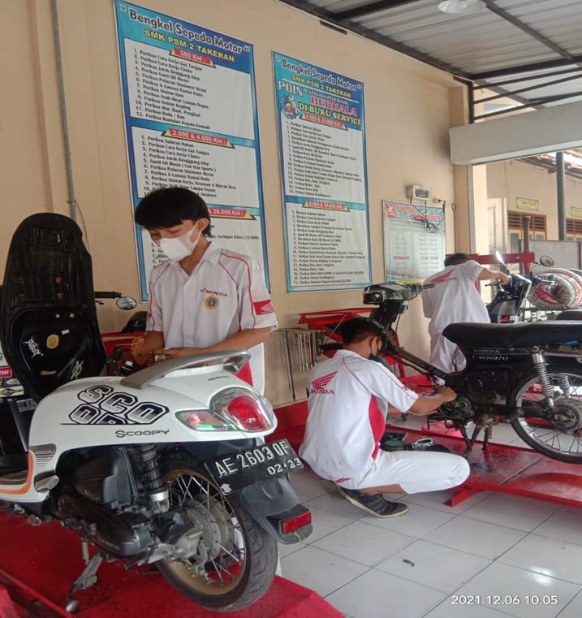

Teknik Bisnis Sepeda Motor
Teknik dan Bisnis Sepeda Motor (TBSM)adalah menggabungkan elemen-elemen pengetahuan mekanika, listrik, elektronik, keselamatan dan lingkungan serta matematika, fisika, kimia, ipa dan manajemen
Yang bekerja sama dengan Industri PT. Yamaha Indonesia motor.
Jurusan tbsm Jurusan ini memiliki perbedaan yang signifikan yaitu lebih memfokuskan pada ketrampilan dalam penguasaan dalam melakukan perawatan dan perbaikan mesin Sepeda Motor.
Diantaranya seperti Sistem kelistrikan sepeda motor, Chasis, Dan Kreatif dalam Modifikasi.
Peluang kerja untuk Jurusan ini sangatlah menjamin diantaranya :
1.Dibidang Industri Otomotif ( Tidak hanya di dealer saja, tetapi bisa menjadi seorang perancang body, transmisi, sasis, hingga engine )
2.Menjadi Periset
3.Bekerja di perusahaan Multinasional
4.Teknisi
5.Modifikator
6.Dan mampu berwirausaha (Membuka bengkel)
7.Banyak sekali ilmu-ilmu nya yang bisa kita dapatkan di jurusan ini, tentunya akan menunjang kita mampu terjun ke dunia lapangan pekerjaan yang kita inginkan.